library(tidyverse) # 数据处理
library(cowplot) # 拼图
library(ggpubr) # 统计分析和作图
library(pheatmap) # 热图
library(RColorBrewer) # 调色板
library(vegan) # 获取多变量分析函数
library(reshape2) # 数据重塑
library(corrplot) # 相关性分析
library(kableExtra) # 表格美化
library(agricolae) # 多重比较
# 设置默认主题
theme_set(theme_bw())12 分组数据分析实战
在这一部分，将以 (Gao et al. 2021)论文中的数据分析为例，展示分组数据分析和可视化的重复性研究。首先，我们简单介绍一下论文的研究背景、方法和主要结果。然后，使用原始数据进行可重复研究，通过复现论文中的图片，展示分组数据分析和可视化的重复性研究。
12.1 论文研究概述
12.1.1 研究背景
- 细菌共培养（coculture）广泛用于微生物生态学研究
- 初始接种比例是关键实验参数，影响微生物群落结构与功能
- 研究目标：探究初始接种比例如何调控共培养系统的最终结构与代谢能力
12.1.2 研究方法
- 选取 大肠杆菌 (E. coli K-12，EC) 与 荧光假单胞菌 (P. putida KT2440，PP) 作为共培养模型
- 在 71 种不同碳源条件下培养，初始比例分别为 PP纯培养、1:1000（EC/PP）共培养、1:1（EC/PP）共培养、 1000:1（EC/PP）共培养、EC纯培养
- 通过比色法 (Biolog GEN III) 评估碳源利用率 (CUE)
- 通过 qPCR 测定共培养中两种菌的相对丰度
12.1.3 主要结果
12.1.3.1 初始接种比例影响最终菌群结构
- 在 59/71 种碳源 中，不同初始比例导致最终比例显著不同
- 但最终比例 并非完全由初始比例决定
- 碳源偏好性 对最终比例影响较大
12.1.3.2 初始比例调控共培养的代谢能力
- 1:1 和 1000:1 共培养 在 14 种碳源上表现出 更高的代谢能力
- 1:1000 共培养 代谢能力较弱，与单菌培养相似
- 可能机制：物种间 代谢共生 (metabolic coupling) 仅在特定初始比例下被触发
12.1.4 研究结论
- 初始接种比例不仅影响共培养实验的 可重复性，还可能 改变微生物相互作用模式
- 碳源可调节初始比例对最终群落结构和功能的影响
- 该研究为微生物群落的可控构建提供了新的思路
12.2 数据准备
论文的原始数据及分析代码都在 GitHub 上。使用 Git 命令将代码克隆到本地，可以快速获取数据和分析代码。
git clone https://github.com/gaospecial/ratio.git --depth 1在本项目中，我们主要关注分组数据的分析和可视化。要用到的数据保存在 data/ratio 文件夹中。接下来我们将使用 R 语言对数据进行处理和分析，生成论文中的图表。
12.3 加载所需的R包
12.4 数据处理
原始数据存储在 data 文件夹中。数据主要来自两个实验:一个是使用 eco-plate 的 BIOLOG 标准测定,另一个是物种特异性的 qPCR 测定。原始数据以格式化的形式提供。
biolog <- read_csv("data/ratio/biolog.csv")
head(biolog)# A tibble: 6 × 5
ratio0 plate carbon_id A590 A750
<chr> <dbl> <dbl> <dbl> <dbl>
1 equal 1 1 0.191 0.138
2 equal 1 2 0.344 0.181
3 equal 1 3 1.37 0.561
4 equal 1 4 1.25 0.778
5 equal 1 5 0.191 0.137
6 equal 1 6 0.259 0.142数据列说明:
ratio0: 初始比例,表示培养物的名称。“none”、“less”、“equal”、“more”、“all” 分别代表恶臭假单胞菌单培养、1:1000(大肠杆菌/恶臭假单胞菌,下同)、1:1、1000:1 共培养和大肠杆菌单培养。plate: 实验重复。carbon_id: 碳源的编号。从1-72,其中1是阴性对照。下面的变量carbon_name显示了每种碳源的名称。A590: BIOLOG 工作站报告的 590 nm 吸光度,在本研究中作为碳源利用效率(CUE)的测量值。A750: BIOLOG 工作站报告的 750 nm 吸光度。
qPCR_data <- read_csv("data/ratio/qPCR.csv")
head(qPCR_data)# A tibble: 6 × 6
ratio0 plate carbon_id EC PP ratio1
<chr> <dbl> <dbl> <dbl> <dbl> <dbl>
1 less 1 10 177416. 175245243. 0.00101
2 less 1 11 239521. 148368132. 0.00161
3 less 1 12 29837437. 142288704. 0.210
4 less 1 13 645563. 162324668. 0.00398
5 less 1 14 52481. 142197847. 0.000369
6 less 1 15 164023932. 156667034. 1.05 EC: 共培养中大肠杆菌的数量PP: 共培养中恶臭假单胞菌的数量
carbon_name <- read_csv("ratio/data/carbon.csv")
head(carbon_name)# A tibble: 6 × 2
carbon_id carbon_source
<dbl> <chr>
1 2 Dextrin
2 3 D-Maltose
3 4 D-Trehalose
4 5 D-Cellobiose
5 6 Gentiobiosse
6 7 Sucrose carbon_id: 碳源的编号carbon_source: 碳源的名称
12.5 原始数据处理
qPCR 定量数据处理:
qPCR_data <- qPCR_data %>%
mutate(ratio0 = factor(ratio0, levels = c("less","equal","more")))通过减去每个平板中阴性对照的值来标准化 A590:
# 标准化
biolog_24h <- biolog %>%
mutate(ratio0 = factor(ratio0, levels = c("none","less","equal","more","all"))) %>%
group_by(plate,ratio0) %>%
mutate(A590=A590-A590[carbon_id==1],A750=A750-A750[carbon_id==1]) %>% # 将阴性对照设为零
filter(carbon_id!=1) %>%
ungroup()
# 分离单培养数据
biolog_mono_24h <- biolog_24h %>%
filter(ratio0 %in% c("none","all")) %>%
mutate(species=factor(ratio0,levels = c("all","none"),labels = c("E. coli","P. putida"))) %>%
dplyr::select(-ratio0)
# 共培养数据
biolog_coculture_24h <- biolog_24h %>%
filter(ratio0 %in% c("less","equal","more")) %>%
mutate(ratio0 = factor(ratio0, levels = c("less","equal","more")))12.6 本研究使用的碳源
本研究使用了 71 种不同的碳源。首先,我们需要将它们分组或聚类成不同的子组。在本研究中,我们使用了两种方法来实现这一点。
12.6.1 碳源聚类并分为三组
首先,通过所有培养物中的 A590 值对碳源进行聚类。这就是我们所说的”使用组”。使用 R 中的 hclust() 方法聚类，然后再使用 cutree() 生成了三个使用组（k = 3），并分别命名为 U1、U2 和 U3。
M_A590_24h <- biolog_24h %>%
mutate(sample=paste(ratio0,plate,sep="-")) %>%
dplyr::select(sample,carbon_id,A590) %>%
pivot_wider(names_from = sample, values_from = A590) %>%
as.data.frame() %>%
tibble::column_to_rownames(var="carbon_id")
# 碳源聚类
k3 <- cutree(hclust(dist(M_A590_24h)),k=3)
carbon_group <- data.frame(usage=k3) %>%
rownames_to_column(var="carbon_id") %>%
mutate(carbon_id=as.numeric(carbon_id)) %>%
mutate(usage=paste("U",usage,sep=""))
# 把分组信息加入碳源数据
carbon_name <- left_join(carbon_name, carbon_group)12.6.2 定义碳源偏好性
其次,通过比较大肠杆菌和恶臭假单胞菌单培养中的 A590 值来确定碳源偏好性。
biolog_mono_A590_24h <- biolog_mono_24h %>%
dplyr::select(plate,carbon_id,species,A590) %>%
pivot_wider(names_from = species, values_from = A590)
# 获取PP偏好的碳源
PP_prefered <- biolog_mono_A590_24h %>%
group_by(carbon_id) %>%
summarise(p=t.test(`P. putida`,`E. coli`,alternative = "greater")$p.value) %>%
filter(p<0.05)
# 获取EC偏好的碳源
EC_prefered <- biolog_mono_A590_24h %>%
group_by(carbon_id) %>%
summarise(p=t.test(`P. putida`,`E. coli`,alternative = "less")$p.value) %>%
filter(p<0.05)
# 构建碳源偏好性数据框（默认设为"None"）
carbon_prefer <- data.frame("carbon_id"=carbon_name$carbon_id,
"prefer"="None",
stringsAsFactors = F)
# 标记碳源偏好性，PP偏好为"PP"，EC偏好为"EC"
carbon_prefer[carbon_prefer$carbon_id %in% EC_prefered$carbon_id,"prefer"] <- "EC"
carbon_prefer[carbon_prefer$carbon_id %in% PP_prefered$carbon_id,"prefer"] <- "PP"
# 在碳源数据中添加利用偏好性信息
carbon_name <- left_join(carbon_name, carbon_prefer)在大肠杆菌偏好的碳源中,大肠杆菌的 CUE 在统计学上显著高于恶臭假单胞菌,而在恶臭假单胞菌偏好的碳源中,恶臭假单胞菌的 CUE 在统计学上显著高于大肠杆菌。
12.6.3 碳源汇总
Table 12.1列出了本研究使用的所有71种碳源，现在碳源增加了两列内容，一列为碳源利用分组（usage），一列为碳源利用偏好（prefer）。
carbon_name %>%
left_join(carbon_prefer) |>
kableExtra::kable()| carbon_id | carbon_source | usage | prefer |
|---|---|---|---|
| 2 | Dextrin | U1 | EC |
| 3 | D-Maltose | U2 | EC |
| 4 | D-Trehalose | U2 | EC |
| 5 | D-Cellobiose | U1 | None |
| 6 | Gentiobiosse | U1 | EC |
| 7 | Sucrose | U1 | None |
| 8 | D-Turanose | U1 | None |
| 9 | Stachyose | U1 | None |
| 10 | D-Raffinose | U1 | None |
| 11 | α-D-Lactose | U1 | None |
| 12 | D-Melibiose | U1 | EC |
| 13 | β-Methyl-D-Glucoside | U1 | None |
| 14 | D-Salicin | U1 | None |
| 15 | N-Acetyl-D-Glucosamine | U2 | None |
| 16 | N-Acetyl-β-Dmannosamine | U1 | None |
| 17 | N-Acetyl-D-Galactosamine | U1 | None |
| 18 | N-AcetylNeuraminic Acid | U2 | EC |
| 19 | α-D-Glucose | U3 | PP |
| 20 | D-Mannose | U2 | PP |
| 21 | D-Fructose | U2 | EC |
| 22 | D-Galactose | U1 | EC |
| 23 | 3-MethylGlucose | U1 | None |
| 24 | D-Fucose | U1 | PP |
| 25 | L-Fucose | U2 | EC |
| 26 | L-Rhamnose | U1 | EC |
| 27 | Inosine | U2 | None |
| 28 | D-Sorbitol | U1 | EC |
| 29 | D-Mannitol | U2 | EC |
| 30 | D-Arabitol | U1 | None |
| 31 | myo-Inositol | U1 | None |
| 32 | Glycerol | U1 | None |
| 33 | D-Glucose-6-PO4 | U2 | EC |
| 34 | D-Fructose-6-PO4 | U2 | EC |
| 35 | D-Aspartic Acid | U1 | None |
| 36 | D-Serine | U2 | EC |
| 37 | Gelatin | U1 | None |
| 38 | Glycyl-L-Prolin | U1 | EC |
| 39 | L-Alanine | U3 | PP |
| 40 | L-Arginine | U3 | PP |
| 41 | L-Aspartic Acid | U3 | PP |
| 42 | L-Glutamic | U3 | PP |
| 43 | L-Histidine | U3 | PP |
| 44 | L-Pyroglutamic | U3 | PP |
| 45 | L-Serine | U1 | None |
| 46 | Pectin | U1 | EC |
| 47 | D-Galacturonic Acid | U3 | PP |
| 48 | L-Galactonic Acid Lactone | U2 | EC |
| 49 | D-Gluconic | U2 | PP |
| 50 | D-Glucuronic | U3 | PP |
| 51 | Glucuronamid | U1 | PP |
| 52 | Mucic Acid | U3 | PP |
| 53 | Quinic Acid | U3 | PP |
| 54 | D-Saccharic | U3 | PP |
| 55 | p-Hydroxy-Phenylacetic Acid | U1 | PP |
| 56 | Methyl Pyruvate | U1 | PP |
| 57 | D-Lactic Acid Methyl Ester | U1 | None |
| 58 | L-Lactic Acid | U3 | PP |
| 59 | Citric Acid | U3 | PP |
| 60 | α-Keto-Glutaric Acid | U1 | PP |
| 61 | D-Malic Acid | U1 | None |
| 62 | L-Malic Acid | U3 | PP |
| 63 | Bromo-Succinic | U1 | PP |
| 64 | Tween 40 | U1 | None |
| 65 | y-Amino-ButryricAcid | U3 | PP |
| 66 | α-Hydroxy-ButyricAcid | U1 | None |
| 67 | β-Hydroxy-D,L-ButyricAcid | U1 | PP |
| 68 | α-Keto-ButyricAcid | U1 | None |
| 69 | Acetoacetic Acid | U1 | PP |
| 70 | Propionic Acid | U1 | PP |
| 71 | Acetic Acid | U1 | None |
| 72 | Formic Acid | U1 | None |
12.7 数据探索
现在我们有了多个参数,包括初始比例(ratio0)和最终比例(ratio1)、共培养中大肠杆菌和恶臭假单胞菌的数量(EC和PP)、CUE(A590)、碳源对大肠杆菌和恶臭假单胞菌的偏好性等。
我们将所有这些数据合并到R中的一个数据框中,并进行如下统计分析。
merged <- left_join(biolog_coculture_24h,qPCR_data) %>%
left_join(carbon_name) %>%
filter(!is.na(ratio1))12.7.1 数据标准化
运行几个分析需要数据呈正态分布,因此,我们探索了合并数据中观察数据的正态性。根据数据值的偏度,我们用选定的方法转换原始数据。标准化后,可以看到所有关键变量大致符合正态分布。
merged <- merged %>% filter(ratio0 %in% c("less","equal","more"))
par(mfrow=c(3,4))
hist(merged$EC)
qqnorm(merged$EC)
hist(log10(merged$EC))
qqnorm(log10(merged$EC))
hist(merged$PP)
qqnorm(merged$PP)
hist(log10(merged$PP))
qqnorm(log10(merged$PP))
hist(merged$ratio1)
qqnorm(merged$ratio1)
hist(log10(merged$ratio1))
qqnorm(log10(merged$ratio1))
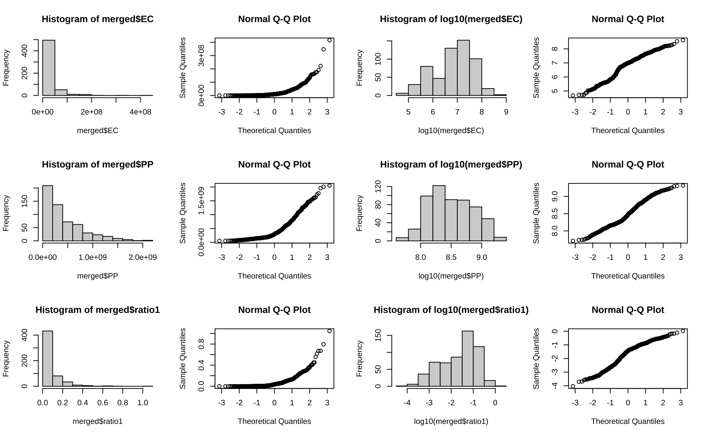
因此,我们对大肠杆菌(EC)和恶臭假单胞菌(PP)的数量进行对数转换。
merged <- merged %>%
# mutate_at(c("A590"),sqrt) %>%
mutate_at(c("EC","PP","ratio1"),log10)12.8 共培养的最终比例
对于符合正态分布的数据，我们可以使用 ANOVA 检验来揭示每种碳源中三种共培养的最终比例的差异。由于包含多重比较，所以使用”BH”方法对 p 值进行了调整。
aov_p <- compare_means(ratio1 ~ ratio0,
group.by = "carbon_id",
data=merged,
method = "anova",
p.adjust.method = "BH") %>%
arrange(p.adj) %>%
mutate(p.adj.signif = cut(p.adj,breaks = c(0,0.01,0.05,1),labels = c("**","*","ns"))) %>%
left_join(carbon_prefer)
aov_p# A tibble: 71 × 9
carbon_id .y. p p.adj p.format p.signif method p.adj.signif prefer
<dbl> <chr> <dbl> <dbl> <chr> <chr> <chr> <fct> <chr>
1 14 ratio1 5.41e-7 3.8 e-5 5.4e-07 **** Anova ** None
2 23 ratio1 2.02e-6 7.20e-5 2.0e-06 **** Anova ** None
3 24 ratio1 3.46e-6 8.2 e-5 3.5e-06 **** Anova ** PP
4 31 ratio1 5.08e-6 9 e-5 5.1e-06 **** Anova ** None
5 30 ratio1 4.18e-5 5.9 e-4 4.2e-05 **** Anova ** None
6 58 ratio1 7.53e-5 8.9 e-4 7.5e-05 **** Anova ** PP
7 8 ratio1 1.45e-4 1 e-3 0.00015 *** Anova ** None
8 10 ratio1 2.17e-4 1 e-3 0.00022 *** Anova ** None
9 32 ratio1 1.11e-4 1 e-3 0.00011 *** Anova ** None
10 35 ratio1 2.12e-4 1 e-3 0.00021 *** Anova ** None
# ℹ 61 more rows12.8.1 最终比例 ANOVA 检验p值的密度分布
为了更好地理解最终比例的差异,我们绘制了所有碳源中三种共培养的最终比例是否不同的调整后 p 值(ANOVA)的密度分布。在Figure 12.2中,垂直线表示 p 值截断值(0.05)的位置。
p.cutoff <- 0.05
p1 <- ggplot(aov_p,aes(p.adj)) +
# geom_histogram(bins=30) +
geom_line(stat = "density",lwd=1) +
geom_density(lwd=0,color=NA,fill="lightblue") +
geom_vline(xintercept = p.cutoff,lwd=1,lty="dashed",color="firebrick") +
labs(x="P.adj",y="Density")+
geom_text(x=0.06,y=0,label=p.cutoff,
vjust="top",
hjust="left",
color="firebrick")
p1
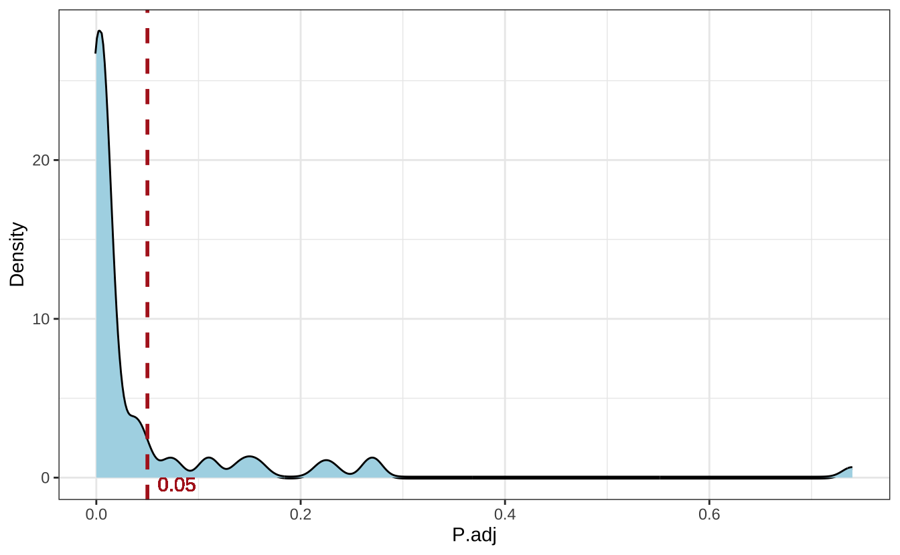
Figure 12.3显示了调整后 p 值显著性的频数，并按碳源偏好性着色。
p2 <- ggplot(aov_p, aes(p.adj.signif,fill=prefer)) + geom_bar() +
labs(x="Significance of adjusted p-value",y="Frequency") +
# geom_text(aes(label=Freq),vjust=0,nudge_y = 1) +
scale_fill_discrete(breaks=c("None","EC","PP"),labels=c("None","E. coli","P. putida"),name="Preference") +
theme(legend.text = element_text(face="italic"),
legend.position = c(0.65,0.7))
p2
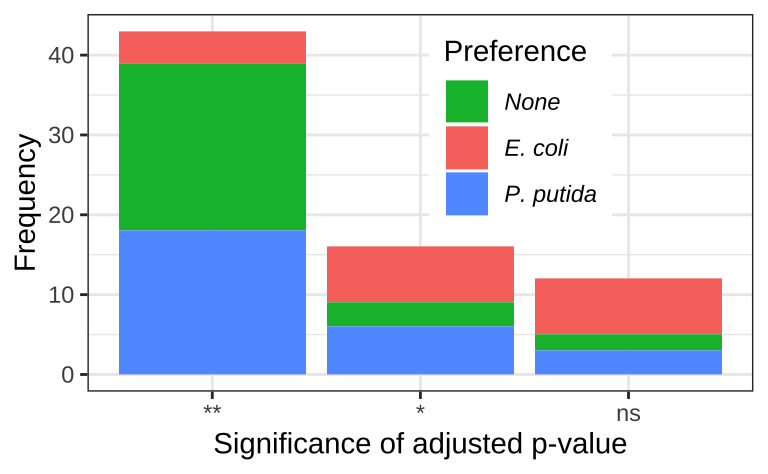
12.8.2 最终比例
为了进一步佐证最终比例之间存在的差异，我们从显著/非显著结果分别挑选了 5 个实例。并使用箱线图展示了这些实例中最终比例的分布Figure 12.4。
merged$ratio0 <- relevel(merged$ratio0, "less")
carbon_name_labeller <- function(x){
name_of <- carbon_name$carbon_source
names(name_of) <- carbon_name$carbon_id
return(as.character(name_of[x]))
}
selected_significant_carbon_id <- c(29,32,36,39,46)
selected_nonsignificant_carbon_id <- c(3,4,12,15,53)
p1 <- ggplot(
data=filter(merged,carbon_id %in% selected_significant_carbon_id) %>%
left_join(aov_p),
mapping = aes(ratio0,ratio1,color=prefer))
p2 <- ggplot(
data=filter(merged,carbon_id %in% selected_nonsignificant_carbon_id) %>%
left_join(aov_p),
mapping = aes(ratio0,ratio1,color=prefer))
plots <- lapply(list(p1,p2),function(x){
x + geom_boxplot() + geom_jitter() +
geom_text(aes(x="equal", y=0.15,label= paste("p.adj=",p.adj,sep = "")),check_overlap = T,size=3,show.legend = FALSE) +
geom_text(aes(x="less",y=.65,label=carbon_id),color="grey",size=3) +
facet_wrap(~carbon_id,
ncol=5,
labeller = labeller(carbon_id=carbon_name_labeller)) +
# stat_compare_means(method="aov") +
scale_x_discrete(breaks=c("less","equal","more"),labels=c("1:1000","1:1","1000:1")) +
theme(axis.text.x = element_text(angle = 60, hjust = 1,vjust = 1)) +
scale_color_discrete(breaks=c("None","EC","PP"),labels=c("None","E. coli","P. putida"),name="Preference")+
theme(legend.text = element_text(face="italic")) +
labs(x="",y="Final ratio (EC/PP)")
})
plot_grid(plotlist = plots,ncol=1,labels=c("B","C"))
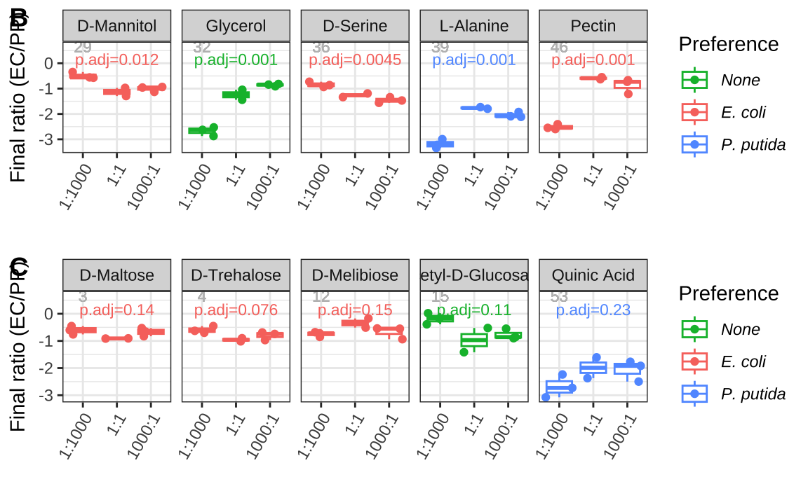
这些结果表明，初始比例对最终比例有显著影响，但最终比例并不完全由初始比例决定。
12.9 碳源偏好性对最终比例的影响
为了分析碳源偏好性如何影响最终比例，我们将最终比例分为三组，然后分别对比碳源偏好性和初始比例。
12.9.1 绘制偏好利用的碳源
这里，分别绘制了大肠杆菌和恶臭假单胞菌偏好的碳源。在Figure 12.5中，左侧是大肠杆菌偏好的碳源，右侧是恶臭假单胞菌偏好的碳源。
plots <- lapply(c("EC","PP"),function(x){
d <- biolog_mono_24h %>%
left_join(carbon_name) %>%
filter(prefer == x)
ggplot(d,aes(carbon_source,A590,fill=species)) +
geom_boxplot() +
labs(y="CUE",x="") +
# coord_flip() +
theme(legend.position = c(0.5,0.9),
legend.direction = "horizontal",
legend.text = element_text(face = "italic"),
legend.title = element_blank(),
axis.text.x = element_text(angle = 60, hjust = 1,vjust = 1))
})
plot_grid(plotlist = plots, ncol=2,labels=c("A","B"))
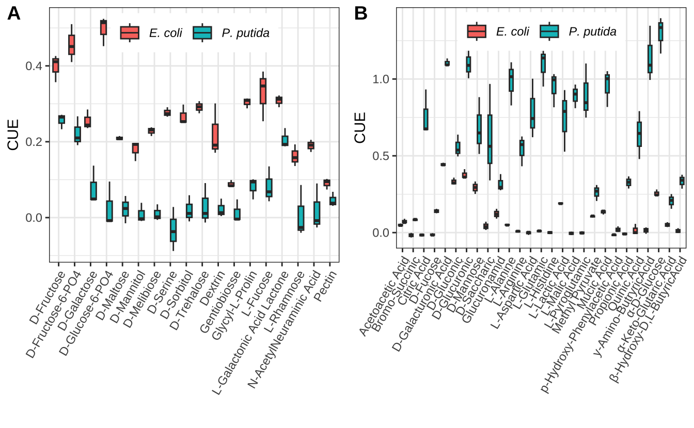
首先，按初始比例分为 3 组，分别分析碳源利用偏好性对最终比例的影响。Figure 12.6显示了不同初始比例的前提下，不同碳源偏好性下的最终比例。
ratio0_labeller <- function(x){
name_of_ratio0 <- c("P. putida","1:1000","1:1","1000:1","E. coli")
names(name_of_ratio0) <- c("none","less","equal","more","all")
return(as.character(name_of_ratio0[x]))
}
p1 <- ggplot(merged,aes(x=prefer,y=ratio1)) +
geom_boxplot() +
facet_wrap(~ratio0,
labeller = labeller(ratio0 = ratio0_labeller)) +
scale_x_discrete(breaks=c("None","EC","PP"),labels=c("None","E. coli","P. putida")) +
theme(axis.text.x = element_text(face = "italic",
angle = 60,
hjust = 1,
vjust = 1)) +
stat_compare_means(method="wilcox.test",comparisons = list(c("EC","None"),c("None","PP"),c("EC","PP")),size=3) +
labs(x="Carbon Source Preference", y="Final Ratio (EC/PP)") +
ylim(c(NA,1.5))
p1
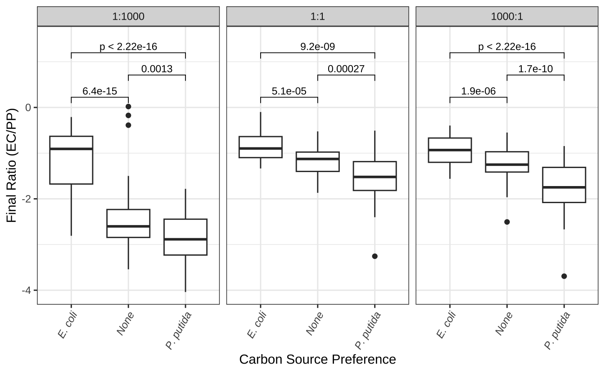
其次，我们将碳源偏好性分为 3 组，分别分析初始比例对最终比例的影响。Figure 12.7显示了不同碳源偏好性下，不同初始比例的最终比例。
prefer_labeller <- function(x){
name_of_prefer <- c("None","E. coli","P. putida")
names(name_of_prefer) <- c("None","EC","PP")
return(as.character(name_of_prefer[x]))
}
p2 <- ggplot(merged,aes(x=ratio0,y=ratio1)) +
geom_boxplot() +
facet_wrap(~prefer, labeller = labeller(prefer = prefer_labeller)) +
theme(strip.text = element_text(face = "italic")) +
stat_compare_means(method="wilcox.test",comparisons = list(c("less","equal"),c("equal","more"),c("less","more")),size=3) +
scale_x_discrete(breaks=c("less","equal","more"),labels=c("1:1000","1:1","1000:1")) +
theme(axis.text.x = element_text(angle = 60, hjust = 1,vjust = 1)) +
labs(x="Initial Ratio (EC/PP)", y="Final Ratio (EC/PP)") +
ylim(c(NA,1.5))
p2
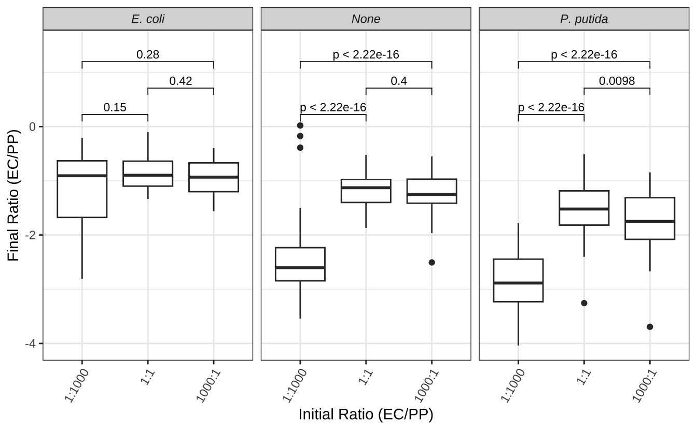
12.10 初始比例调控碳源利用效率
12.10.1 单培养和共培养的比较
首先，我们比较了单培养和共培养的碳源利用效率(CUE)。Figure 12.8显示了单培养和共培养的 CUE。为了便于比较，我们在图上做了一个水平参考线，表示所有样本的中位数。此外，还在图上标记了每个初始比例下的中位数。
p_cue <- ggplot(biolog_24h,aes(ratio0,A590)) +
geom_boxplot() +
geom_hline(aes(yintercept = median(A590)),lty=2,color="firebrick") +
scale_x_discrete(breaks=c("none","less","equal","more","all"),
labels=c("P. putida","1:1000","1:1","1000:1","E. coli")) +
theme(axis.text.x = element_text(angle = 60, hjust = 1,vjust = 1)) +
geom_text(aes(ratio0,y,label=y),
inherit.aes = F,
data = biolog_24h %>% group_by(ratio0) %>%
summarise(y=median(A590)),
vjust=-0.3) +
labs(x="Initial Ratio (EC/PP)",y="CUE")
p_cue
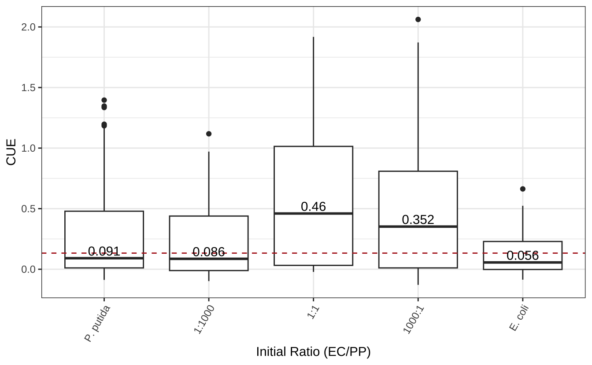
接下来，我们使用 vegan::rda() 对不同初始比例下的碳源利用情况进行 PCA 分析。
为了更好地理解不同初始比例菌群碳源利用谱的差异，我们将 PCA 分析结果绘制成图。Figure 12.9显示了碳源利用谱的 PCA 分析。椭圆代表聚类的 95% 置信区间。由图可知，这 5 组样品大体上被分为 3 类。第一类是大肠杆菌单独培养，第二类是恶臭假单胞菌和1:1000 共培养，第三类是大肠杆菌与恶臭假单胞菌 1:1 和 1000:1 的共培养。
library(vegan)
# PCA
pca <- rda(t(M_A590_24h))
# 计算贡献率
percent_var <- pca$CA$eig/pca$tot.chi
df <- scores(pca)$sites %>%
as.data.frame() %>%
tibble::rownames_to_column(var="sample") %>%
separate(sample,c("ratio0","rep"),sep="-",remove = F)
df$ratio0 <- factor(df$ratio0,
levels = c("none","less","equal","more","all"),
labels = c("P. putida","1:1000","1:1","1000:1","E. coli"))
# 聚类
group <- cutree(hclust(dist(t(M_A590_24h))),k=3)
clustered_group <- as.data.frame(group) %>%
tibble::rownames_to_column(var = "sample")
df = df |> left_join(clustered_group)
# PCA plot
p <- ggplot(df, aes(PC1,PC2,label=ratio0, color=ratio0))+
geom_point(size=3) +
scale_color_manual(values = brewer.pal(9,"YlOrRd")[5:9],name="initial ratio")+
xlab(paste0("PC1: ", round(percent_var[1] * 100), "% Variance")) +
ylab(paste0("PC2: ", round(percent_var[2] * 100), "% Variance"))
p
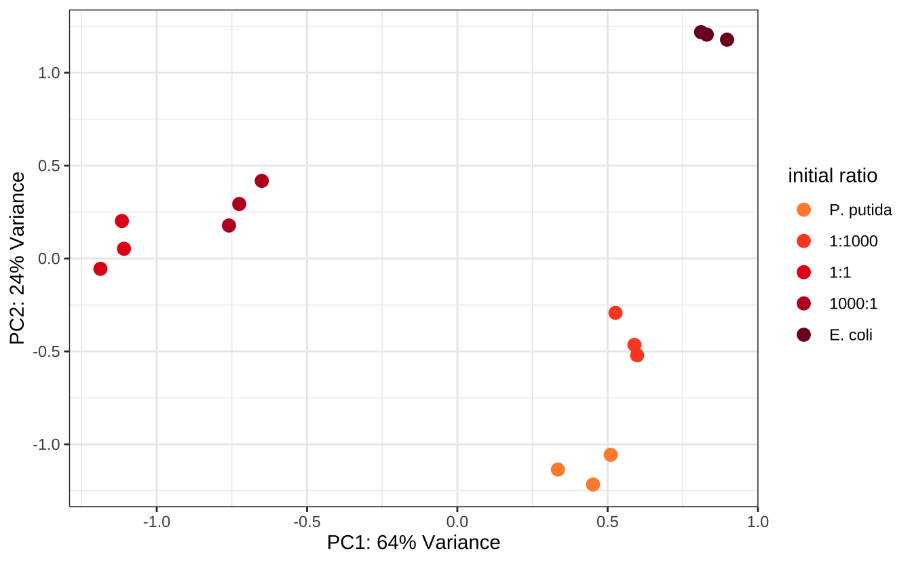
12.10.2 初始比例调控共培养的碳源利用能力
特定比例的大肠杆菌和恶臭假单胞菌共培养获得了对 14 种 U2 碳源更高的代谢能力Figure 12.10。
anno_carbon_group <- carbon_group %>%
left_join(carbon_prefer) %>%
column_to_rownames(var="carbon_id") %>%
rename(Usage = usage, Preference = prefer)
colnames(M_A590_24h) <- rep(c("E. coli","1:1","1:1000","1000:1","P. putida"),each=3)
pheatmap(t(M_A590_24h),
annotation_col = anno_carbon_group[c(2,1)],
cutree_cols = 3,
# cutree_rows = 3,
fontsize_col = 6,
silent = T) |> print()
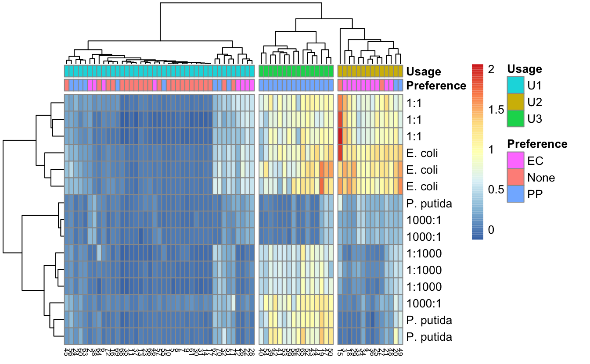
我们接下来分析，这14 种 U2 碳源下不同体系的CUEFigure 12.11。
# 仅分析U2碳源
biolog_24h_U2 <- left_join(biolog_24h,carbon_group) %>%
filter(usage=="U2")
# 多重比较
hsd_group <- lapply(unique(biolog_24h_U2$carbon_id), function(x){
m <- aov(A590~ratio0,data=filter(biolog_24h_U2,carbon_id==x))
library(agricolae)
g <- HSD.test(m,"ratio0",group=TRUE)$groups
d <- rownames_to_column(g,var="ratio0")
d$carbon_id <- x
return(d[-2])
})
# 合并多重比较结果
hsd_group <- do.call("rbind",hsd_group)
hsd_group$ratio0 <- factor(hsd_group$ratio0,
levels = c("none","less","equal","more","all"))
# 在箱线图顶部添加组标签
hsd_group <- biolog_24h_U2 %>%
group_by(ratio0,carbon_id) %>%
summarize(q3=quantile(A590)[3]) %>%
left_join(hsd_group)Figure 12.11 显示了 14 种 U2 碳源的单培养和共培养的 CUE。x 轴表示培养条件，y 轴表示 CUE。进行了 ANOVA 和 Tukey 多重比较。箱线图上的文本表示不同培养物之间是否观察到显著差异。明显可以得出，特定初始比例的大肠杆菌和恶臭假单胞菌共培养获得了对 14 种 U2 碳源更高的代谢能力。说明合成菌群的功能受到初始比例的调控。
u2_p1 <- ggplot(biolog_24h_U2, aes(ratio0,A590)) +
geom_boxplot() +
geom_text(aes(x="none",y=max(A590)*1.1,label=carbon_id),color="grey",vjust=1,size=3,show.legend = F) +
geom_text(aes(x=ratio0,y=q3,label=groups),show.legend = F,
data = hsd_group,inherit.aes = F,
vjust=0,nudge_y = .2,hjust=0) +
facet_wrap(~carbon_id,ncol=5,
labeller = labeller(carbon_id=carbon_name_labeller)) +
scale_x_discrete(breaks=c("none","less","equal","more","all"),labels=c("P. putida","1:1000","1:1","1000:1","E. coli")) +
scale_y_continuous(breaks = c(0,1,2)) +
labs(x="",y="CUE") +
# ggpubr::stat_compare_means(method="aov",label="p.format") +
theme(axis.text.x = element_text(angle = 45,hjust = 1,vjust = 1),
legend.position = "top",
legend.direction = "horizontal"
)
u2_p1
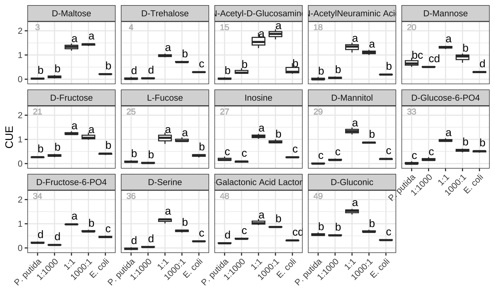
12.11 小结
本研究通过对碳源利用谱的分析，揭示了初始比例对合成菌群的功能有重要影响。我们发现，初始比例对最终比例有显著影响，但最终比例并不完全由初始比例决定。碳源偏好性对最终比例有显著影响，但不能完全解释这种现象。进一步的分析发现，特定比例的大肠杆菌和恶臭假单胞菌共培养获得了对 14 种 U2 碳源更高的代谢能力。这些结果表明，合成菌群的功能受到初始比例的调控。